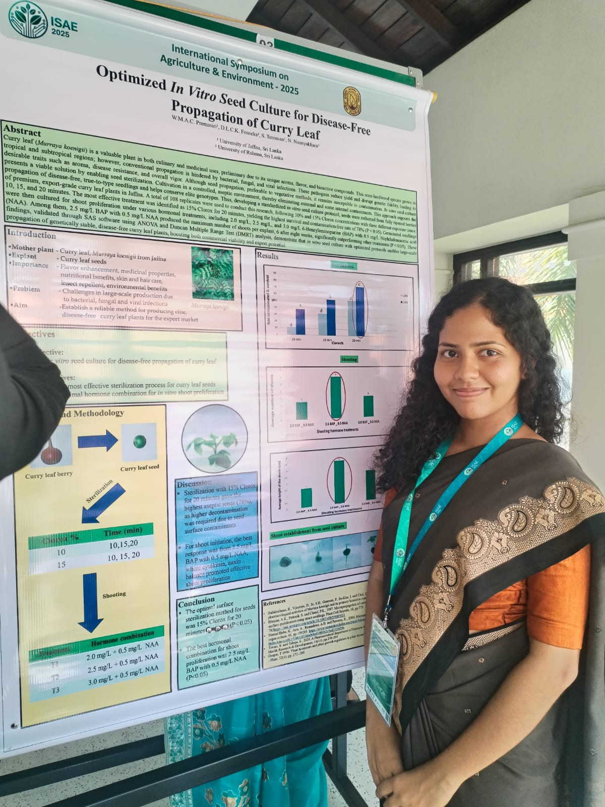
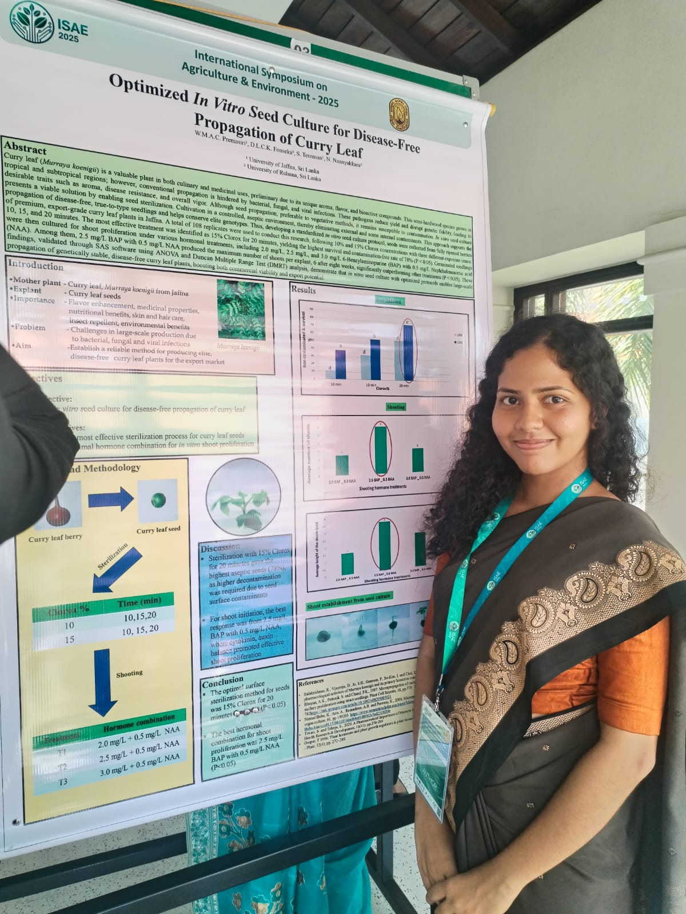

Conference Presentations
Sharing research insights at international academic gatherings
Green to Green 2025
2025📍 SLCARP, BMICH-Sri Lanka
Presentation
"Resource-Efficient In-Vitro Shoot Multiplication of Salacia reticulata (Kothalahimbutu) for Sustainable Medicinal Plant Production"
5th Int'l Electronic Conference on Agronomy
2025📍 SciForum Online
Presentation
"AI-driven Oryza sativa (paddy) yield forecasting using open satellite data, weather APIs & historical data for Sri Lankan agro zones"
YSCMR2025
2025📍 NIFS-YSA, Sri Lanka
Presentation
"Innovative in vitro propagation of Zingiber officinale (ginger) local variety 'Siidi' for sustainable commercial cultivation and biodiversity conservation"
3rd Int'l Online Conference on Agriculture
2025📍 SciForum, MDPI
Presentation
"Efficient in vitro propagation approach for mass multiplication of Curcuma longa L. (turmeric)"
ISAE2025
2025📍 University of Ruhuna, Sri Lanka
 

Presentation
"Optimized in vitro seed culture for disease-free propagation of Murraya koenigii (curry leaf)"
InCAPM2025
2025📍 Wayamba University, Sri Lanka
Presentation
"Development of an in vitro protocol for efficient shoot proliferation in Murraya koenigii (curry leaf)"